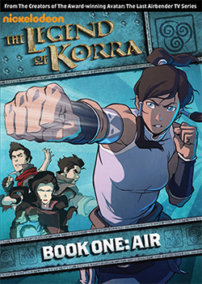
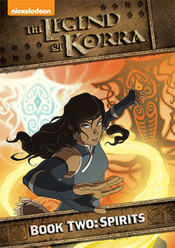
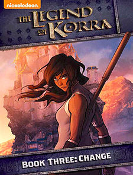
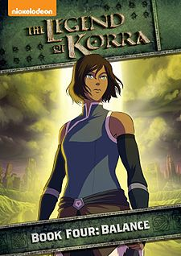

Avatar: The Legend of Korra |
Book One: AirAfter the conclusion of the Hundred Year War, Avatar Aang and Fire Lord Zuko had brought people from the four nations together and founded the United Republic of Nations, with its capital being Republic City, a large "metropolis powered by steampunk-type technology" such as cars and motorcycles. Aang and Katara had three children, the youngest of which was Tenzin, the only airbender of the three siblings. Meanwhile, Toph Beifong had traveled extensively to teach metalbending to other earthbenders. After Aang's death in 153 AG, he was reincarnated as a Southern Water Tribe girl named Korra. At the present time, seventy years after the end of the Hundred Year War, Korra, a rebellious, seventeen-year-old girl, is set to complete her airbending training and fulfill her role as the Avatar. She has already mastered waterbending, earthbending, and firebending by this point. At the beginning of the series, Korra travels to Republic City and starts her airbending training with Tenzin. Tenzin himself is married to Pema. He has two daughters, Jinora, a "bookworm", and Ikki, a "motor-mouth", while Meelo, his first son, was his only son until the tenth episode, "Turning the Tides", when Pema gave birth to another boy named Rohan. However, Republic City is not what Korra imagined it to be. Anti-benders called "Equalists", who oppose the arts of bending, utilize techniques such as chi blocking to further their goals of revolution, led by Amon. Korra must fight rampant crime and the Anti-bending Revolution, assisted by two brothers, Mako, a firebender, and Bolin, an earthbender. She is also joined by her animal companion, Naga, and the Metalbending Police Force of Republic City, who are led by Toph's daughter, Lin Beifong. |
Book Two: SpiritsSix months after the events of the Anti-bending Revolution, Korra, having learned to bend all four elements and achieved status as a Fully Realized Avatar, must once again become the student when she delves into the realm of spirits under her paternal uncle's teachings and tutelage. Now learning the depths of her spiritual connections, Korra soon discovers that light cannot exist without the dark, and in a never ending cycle of creation and destruction, only she has the ability to maintain balance in the world. |
Book Three: ChangeSix months after the events of the Anti-bending Revolution, Korra, having learned to bend all four elements and achieved status as a Fully Realized Avatar, must once again become the student when she delves into the realm of spirits under her paternal uncle's teachings and tutelage. Now learning the depths of her spiritual connections, Korra soon discovers that light cannot exist without the dark, and in a never ending cycle of creation and destruction, only she has the ability to maintain balance in the world. |
Book Four: BalanceFollowing the insurrection of the Red Lotus, Korra left to the Southern Water Tribe to recuperate and Team Avatar moved on with their lives. Three years later, in 174 AG, the former captain of Zaofu's guard, Kuvira, has been traveling the Earth Kingdom with Bolin, Varrick, and her fiancée, Baatar Jr., on a quest to reunite the nation after it fell into disarray following Queen Hou-Ting's death. When she was supposed to relinquish control to the newly crowned Earth King Wu, she denounced his authority and appointed herself the ruler of the Earth Empire. Meanwhile, Korra managed to heal physically, though she is still facing an emotional block caused by residual traces of mercury. With troubles coming to the Earth Kingdom, Team Avatar divided, and the Avatar's whereabouts unknown, the search for balance begins anew. |